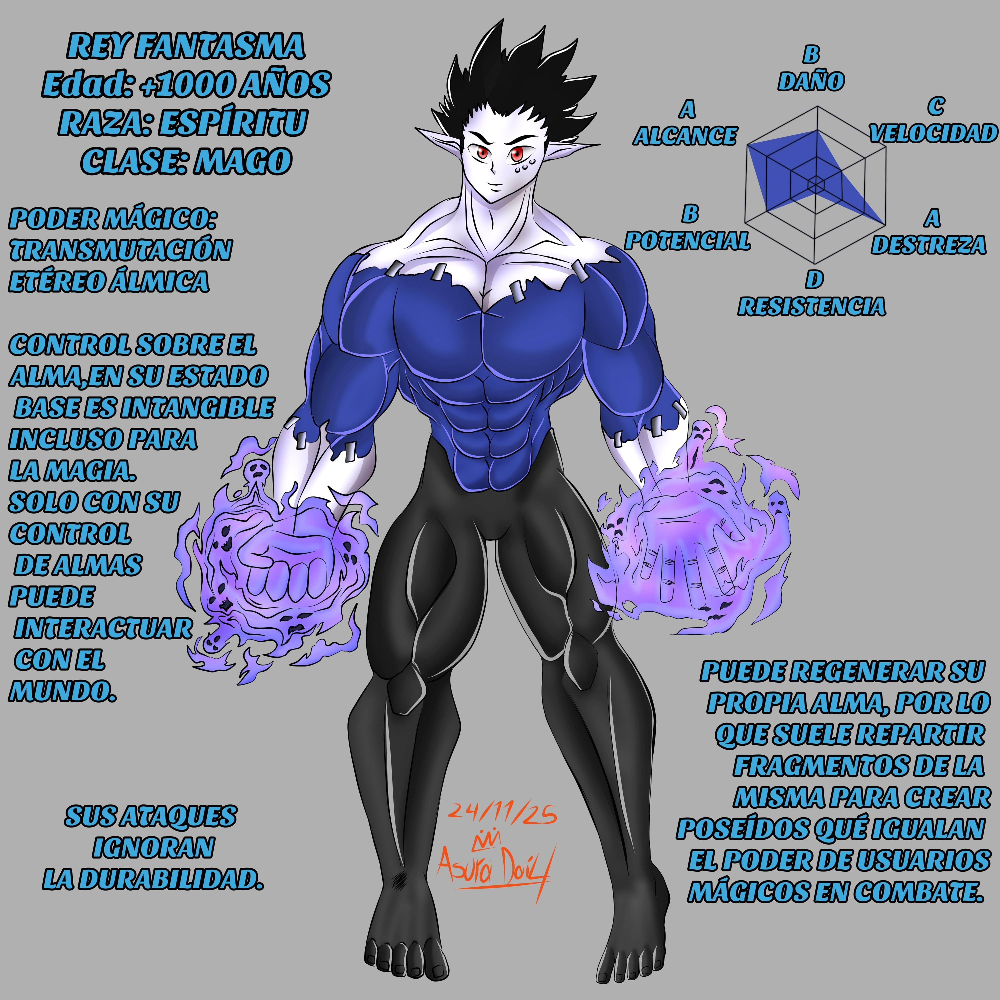
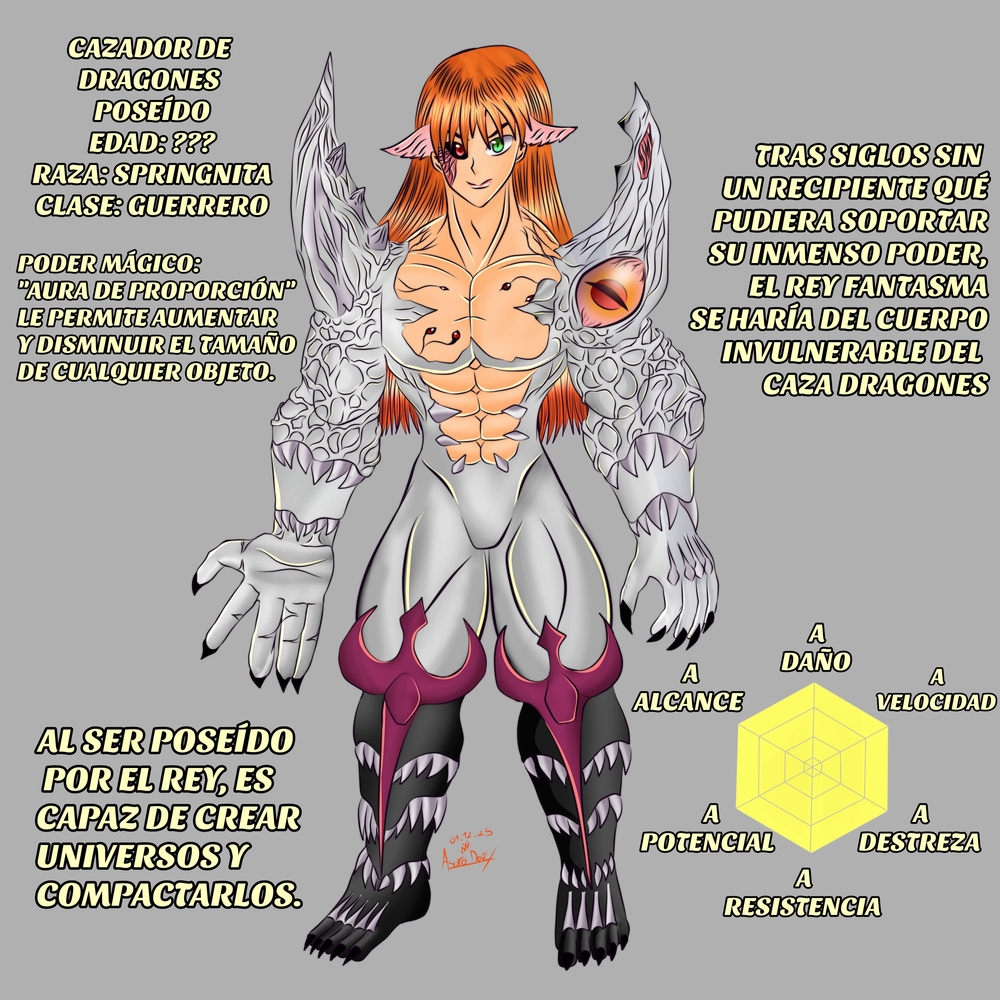

El espíritu más fuerte.
Su origen es desconocido, y su existencia pasaría desapercibida
por el mundo hasta el día en que apareció un cuerpo capaz de
soportar su poder. Desde que el hermano de Diana Godoy obtuvo
el título de “cazador de dragones” el rey reunió un ejército de
poseídos creados con fragmentos de su cuerpo. Quienes retuvieron
mejor la esencia del rey, serían conocidos como “Los 7 horrores”.
Conformados por “Mente”, “Encías”, “Músculos”, “Piel”, “Huesos”,
“Grasa” y “Corazón” sirvientes fieles que colaboran para capturar
al cazador asi como tambien les encargaría eliminar a todos los
exorcistas.
Tras un pacto en el que no le harían daño a su hermana el cazador
autorizo que controlara su mente, dotando al rey de un cuerpo
invencible y omnipotente. Con el qué tendría que acostumbrarse
tras milenios sin un cuerpo. Comienzan sus planes para ejecutar un
hechizo a gran escala que eliminaría la limitación de tiempo qué
evita que los usuarios mágicos vivan más de 12 años tras despertar
su poder mágico, esto para poder hacerle frente a los remanentes
de “Los perpetuos” que amenazan la vida misma. Sin embargo,
Diana Godoy no se quedaría de brazos cruzados y emprendería un
viaje para rescatar a su hermano.
Conquistaria el planeta eterno, lugar donde se adaptaría a su
nuevo cuerpo y sitio en el que ejecutaría sus planes, su ejército
de fantasmas serían un hueso duro de roer para el grupo de la “Hechizera Diana”.